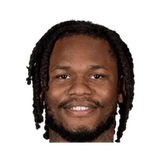

“I look forward to it. There’s a lot of great people in that organization, a lot of great fans, members of the media. I’m looking forward to it, because my relationship with DeMarcus Cousins, Rudy Gay, Ben McLemore, a lot of the guys I coached, as well as the fans. They embraced me and my family. When I got fired, which was a low point, the support of the fans and the media was overwhelming. So I’m looking forward to it. But honestly, once that jump ball goes up it’s all about trying to get a win.”

What NBA players and coaches have said about Ben McLemore
6 quotes about Ben McLemore from 6 players, coaches and executives, newest first. Each one links to its original source.
Best quotes
Royce Young:Chris Paul on hitting Ben McLemore below the belt:
“I tried to get by him. It was incidental. I know when I did it on purpose, that was in college. That was a long time ago. I checked on Ben, he said he was fine. I know Mike. He's gonna get mad, he's gonna yell and scream.”
Divac said in an interview on SiriusXM NBA Radio.
“We’re very happy with Ben (McLemore), the way he’s progressing this summer. He’s a very young player that we like a lot, so we’re going to keep him.”
What Ben McLemore has said about other players and coaches →
Quotes per season
Who talks about Ben McLemore most
 Chris Paul1 quote
Chris Paul1 quote DeMarcus Cousins1 quote
DeMarcus Cousins1 quote George Karl1 quote
George Karl1 quote- Michael Malone1 quote
- Pete D'Alessandro1 quote
- Vlade Divac1 quote
Back and forth
2020-21
1 quoteRoyce Young:Chris Paul on hitting Ben McLemore below the belt:
“I tried to get by him. It was incidental. I know when I did it on purpose, that was in college. That was a long time ago. I checked on Ben, he said he was fine. I know Mike. He's gonna get mad, he's gonna yell and scream.”
2016-17
1 quoteDivac said in an interview on SiriusXM NBA Radio.
“We’re very happy with Ben (McLemore), the way he’s progressing this summer. He’s a very young player that we like a lot, so we’re going to keep him.”
2015-16
3 quotes“I look forward to it. There’s a lot of great people in that organization, a lot of great fans, members of the media. I’m looking forward to it, because my relationship with DeMarcus Cousins, Rudy Gay, Ben McLemore, a lot of the guys I coached, as well as the fans. They embraced me and my family. When I got fired, which was a low point, the support of the fans and the media was overwhelming. So I’m looking forward to it. But honestly, once that jump ball goes up it’s all about trying to get a win.”
Blake Ellington:Cousins on McLemore:
“Ben's a big piece of this team, we depend on him on a nightly basis. When he's playing well the team's playing well.”
James Ham:George Karl:
“I think James (Anderson) deserves an opportunity. Ben (McLemore) just has to go back and earn some minutes from the bench.”
2013-14
1 quote“So, I'm standing here today and I'm saying Ben McLemore is a guy that we have not put in deals. He's a guy that we love here.”